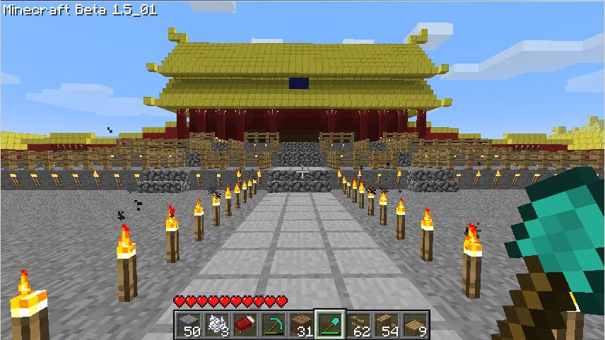
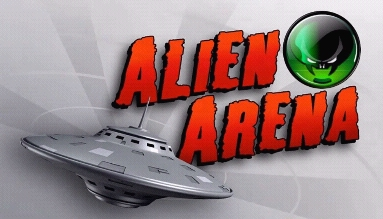
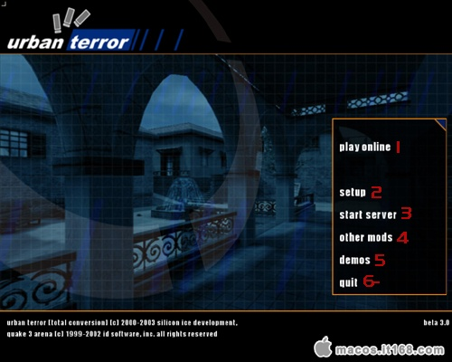

| ubuntu |
| ubuntu的彩蛋 |
|
ubuntu这么有名的系统，也不是没有彩蛋。 ubuntu在运行窗口中（按alt+f2打开）输入"free the fish"会看到一个鱼的图标，下面是“unity中没有彩蛋”。输入"gegls from outer space"会看到“unity中真的没有彩蛋” 。 |
| Meet Ubuntu |
| Fast, free and incredibly easy to use, the Ubuntu operating system powers millions of desktop PCs, laptops and servers around the world. Ubuntu will work with your existing PC files, printers, cameras, music players and smartphones - and it comes with thousands of free apps.What is an operating system?An operating system is what makes your computer work, running all your programs and managing your hardware. Other examples include Microsoft Windows and Mac OS X.Why use Ubuntu?How does it compare to my system?With Ubuntu, you can do all the things you can do with other operating systems. But with Ubuntu you can do them faster, more securely and, of course, for free.Explore features How can it be free?Ubuntu is free and it always will be. That's because it's the work of open-source software experts from all over the world - people who believe software should be free. |
| ubuntu支持的游戏 |
ubuntu虽说不像windows那样有名，但是还是有部分游戏厂商还是为这个不太有名的系统制作了游戏。让我们来看看吧。
 《Minecraft》最初是由一个人独立完成的游戏，游戏设计师Markus Alexej Persson（马库斯·阿列克谢·泊松）），通常被称为Notch，从多款游戏获得灵感，其中较为著名的是《地牢守护者》，而发想过程中《Infiniminer》也对他起了相当大的影响。但是尽管这款游戏只有一个人开发，却曾创下单日获利26万欧元（相当于人民币242万元左右）的纪录。《Minecraft》属于3D的第一人称沙盘游戏，所呈现的世界并不是华丽的画面与特效，而是注重在游戏性上面。玩家在游戏中做着建设，破坏等等许多事，透过像乐高一样的积木来组合与拼凑，轻而易举的就能制作出小木屋、城堡甚至城市，但是若再加上玩家的想像力，空中之城、地底都市都一样能够实现。玩家不仅可以创造房屋建筑，甚至可以创造属于自己的都市和世界，玩家可以通过自己创造的作品来体验上帝一般的感觉。  Alien Arena是一个免费第一人称射击游戏，使用改动的id Tech 2。行动和武器的很多方面非常类似《雷神之锤II》，也拥有全部的跳跃技巧 特性:单人游戏和多人游戏模式相同，对抗机器人。 除了仿照《雷神之锤II》的特点，游戏引入了躲闪特性。CRX引擎添加了大量新技术，比如32位材质贴图、GLSL、视差映射、着色器；从7.30开始，全平台使用OpenAL处理音频。武器拥有两种射击模式。  Urban Terror（简写为UrT或者UT）是一个雷神之锤3（Quake 3）的MOD，2000年quakecon发布第一个beta版本2001年发布第一版，2007年之后可以依赖开放源代码的ioquake3独立运行，尽管自身并非开源，所以理论上在ioquake3支持的平台上都可以运行。现在开发由Frozen Sand LLC（进行，并从玩家制作内容中不断补充。属于当代背景的第一人称射击游戏。官方口号是：好莱坞式的技巧型射击游戏，或许基于现实不过乐趣超越现实。 |